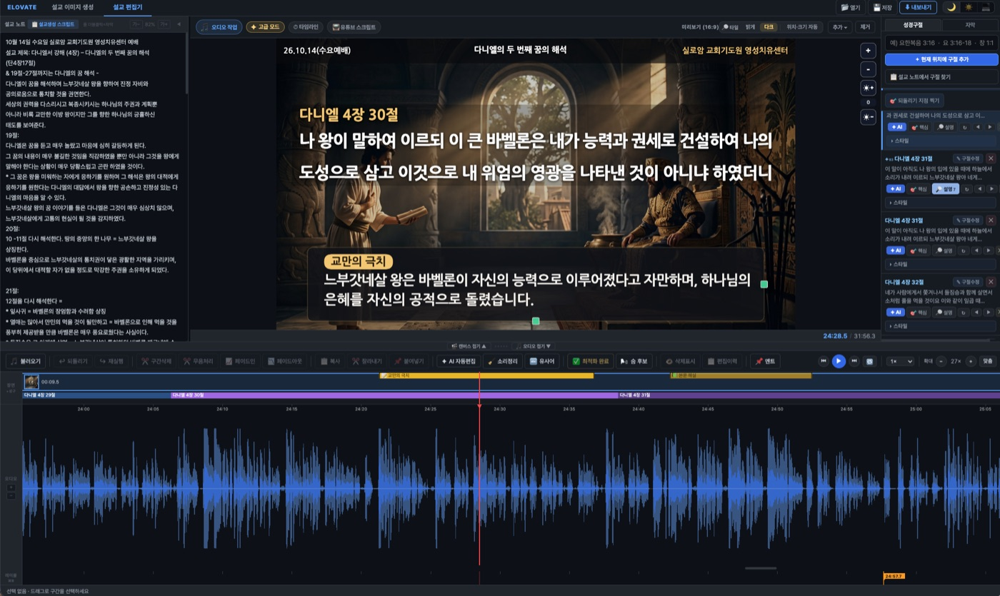
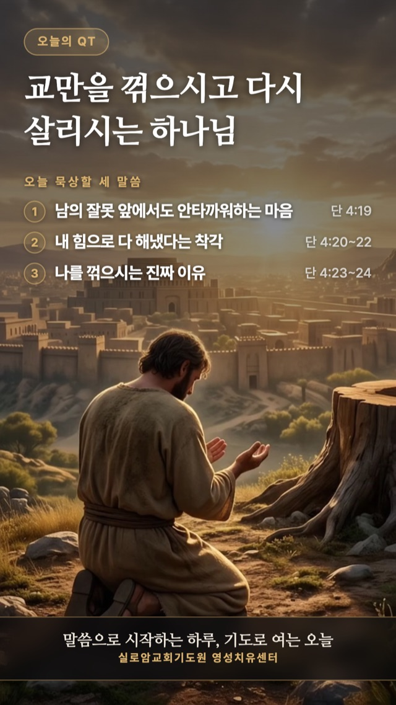
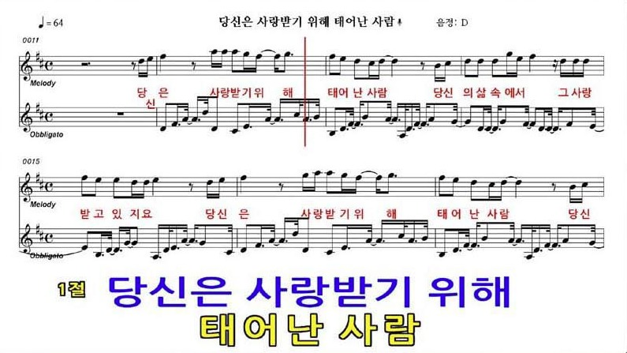
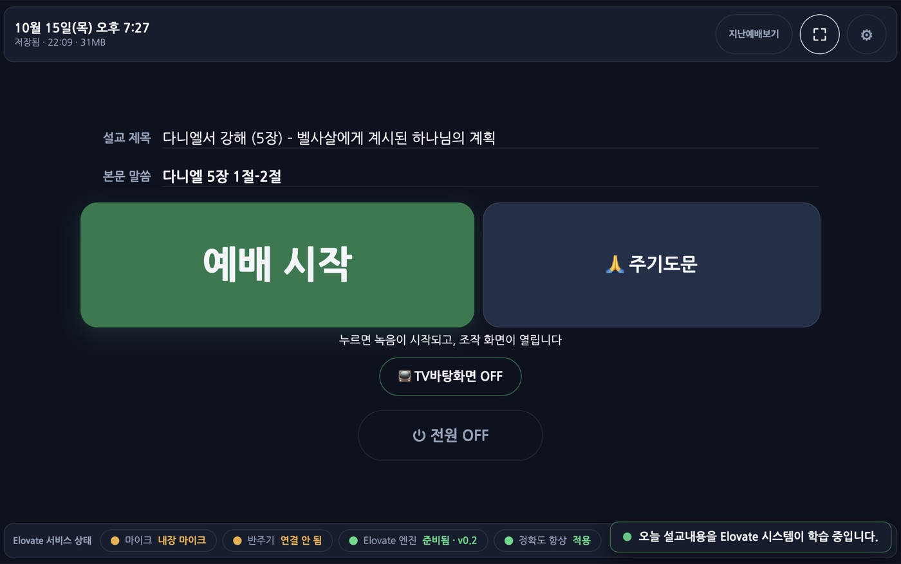
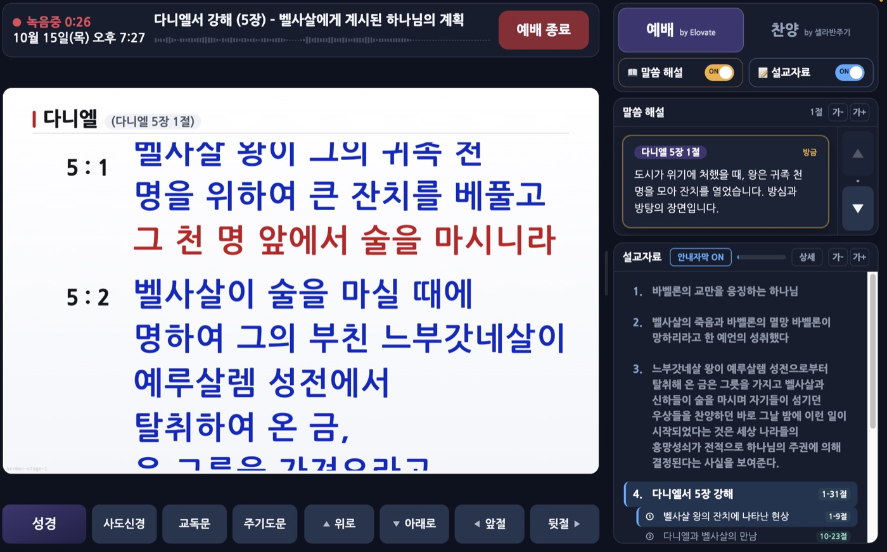
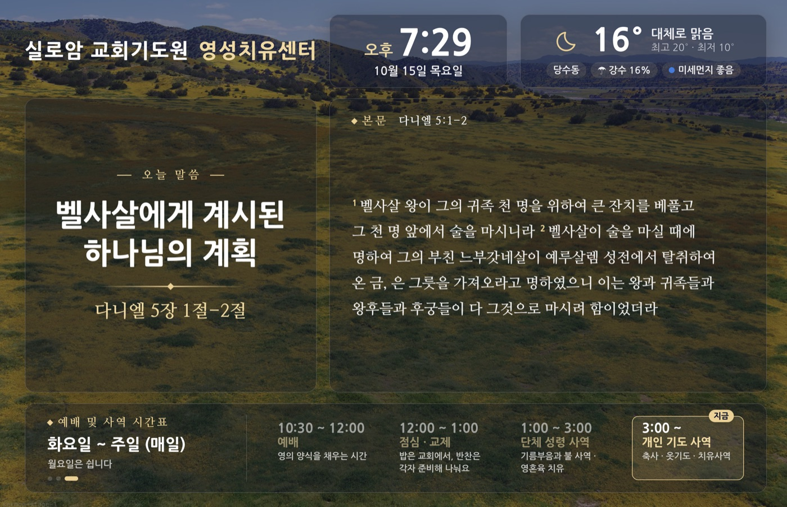
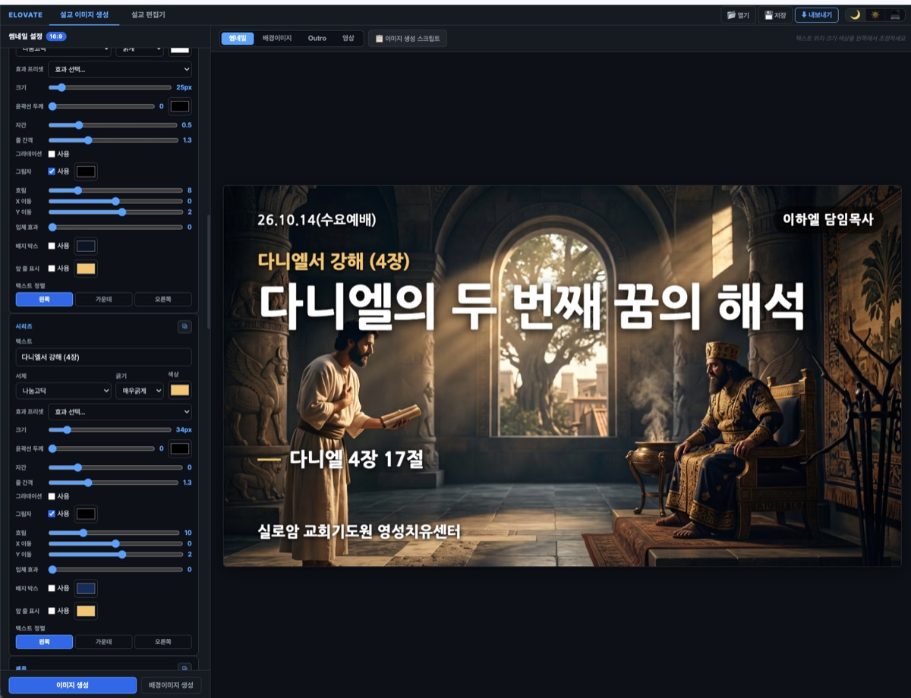
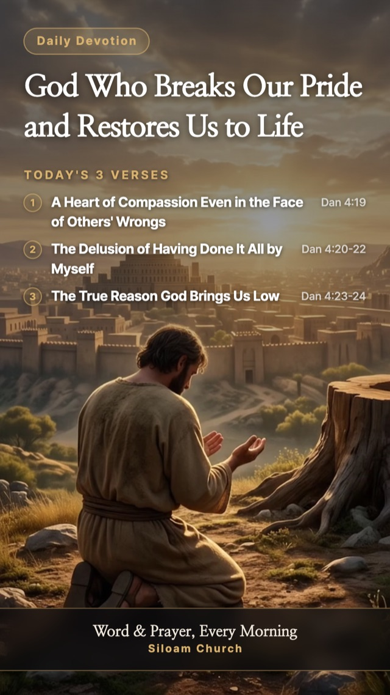

AI 목회 어시스턴트
설교 준비부터 예배 진행, 말씀 영상과 매일 묵상까지.
목사님 곁에서 조용히 섬기는 AI 목회 어시스턴트입니다.
3 : 16하나님이 세상을 이처럼 사랑하사독생자를 주셨으니이는 그를 믿는 자마다멸망하지 않고 영생을 얻게하려 하심이라
3 : 17하나님이 그 아들을 세상에보내신 것은 세상을 심판하려하심이 아니요 그로 말미암아세상이 구원을 받게 하려 하심이라
Worship‑Flow Live 회중 화면. 목사님이 읽으시는 말씀을 따라갑니다.
Elovate Intelligence
설교 음성에서 성경 주소를 알아듣고, 목사님의 말투와 교회의 예배 순서를 스스로 배웁니다. 한국 교회 강단의 말투로 66권을 익혔고, 설교를 거듭할수록 우리 교회에 맞게 더 정확해집니다.
Products
하나의 엔진이 세 제품을 받칩니다. 따로 쓰셔도, 함께 쓰셔도 됩니다. 세 제품 모두 교회에 맞춰 제작됩니다.
Worship‑Flow Live
본문을 부르시면 성경이 오르고, 읽으시면 줄이 따라가고, 찬송을 부르시면 반주기가 준비됩니다. 미디어 봉사자가 없는 주일에도 예배는 평소처럼 흐릅니다.
3 : 17왕이여 우리가 섬기는 하나님이계시다면 우리를맹렬히 타는 풀무불 가운데에서능히 건져내시겠고왕의 손에서도 건져내시리이다
3 : 18그렇게 하지 아니하실지라도왕이여 우리가 왕의 신들을섬기지도 아니하고 왕이 세우신금 신상에게 절하지도아니할 줄을 아옵소서
Worship‑Flow
녹음 하나로 전사, 성경 구절, 하이라이팅 자막, 썸네일까지.

QT‑Flow
한 본문을 세 말씀으로 나누어 묵상과 기도까지. 한국어와 영어로 매일 아침 성도에게 닿습니다.

Worship‑Flow Live
찬송, 성경 봉독, 설교까지 목사님의 음성만으로 회중 화면이 바뀝니다. 아래로 내려가며 한 예배를 따라가 보십시오.
당신은 사랑받기 위해 태어난 사람 부르겠습니다

3 : 16사드락과 메삭과 아벳느고가왕에게 대답하여 이르되느부갓네살이여 우리가이 일에 대하여왕에게 대답할 필요가 없나이다
3 : 17왕이여 우리가 섬기는 하나님이계시다면 우리를맹렬히 타는 풀무불 가운데에서능히 건져내시겠고왕의 손에서도 건져내시리이다
3 : 18그렇게 하지 아니하실지라도왕이여 우리가 왕의 신들을섬기지도 아니하고왕이 세우신 금 신상에게절하지도 아니할 줄을 아옵소서
찬송 제목 한마디에 반주기로 곡이 전해지고, 반주기 화면이 회중 화면에 그대로 오릅니다.
책 이름을 흘려 말씀하셔도, "16절에서 18절"처럼 범위로 부르셔도 알아듣습니다.
낭독을 따라 읽는 줄을 붉게 비춥니다. 되돌아 읽으셔도, 한 절을 건너뛰셔도 다시 찾아갑니다.
설교 제목이 오르고, 설교 자료의 대지가 말씀하시는 순간에 맞춰 아래 띠로 나타납니다. 예배는 처음부터 끝까지 기록됩니다.
On the pulpit
단추 하나로 녹음과 화면이 함께 시작됩니다. 설교 자료가 있으면 제목과 본문도 미리 읽어 둡니다. 아래는 한 교회에 맞춰 제작되어 지금 운영 중인 실제 화면입니다.

오늘 설교 제목과 본문이 이미 채워져 있습니다. 누르시면 녹음이 시작되고 조작 화면이 열립니다. 마이크, 반주기, 엔진 상태는 아래 줄에서 한눈에 보입니다.
지금 오른 절과 말씀 해설, 설교 자료가 한 화면에. 앞절 · 뒷절 · 사도신경 · 교독문 · 주기도문은 손끝 하나로 올립니다.

예배를 기다리는 시간에는 오늘 말씀과 본문, 시계와 날씨, 예배 시간표가 회중 화면을 채웁니다.

Real‑time insight
오른 구절의 역사적 배경과 원어의 뜻, 관련 구절과 신학적 의미가 실시간으로 정리됩니다. 단상에서는 말씀 해설로, 회중 화면에서는 핵심 한 줄로 비칩니다. 화면의 구성과 해설의 깊이는 교회마다 달리 맞춥니다.
유대 관원 니고데모가 '밤'에 찾아옴
사랑 (Agape): 조건 없는 사랑
독생자: 유일한 관계
구원은 우리의 노력으로 얻는 것이 아니라, 믿음으로 받는 하나님의 '선물'입니다.
회중 화면에는 핵심만, 단상 화면에는 이렇게 더 자세히 정리됩니다.
니고데모와의 대화 상황. 유대 관원이었던 니고데모가 밤중에 예수님을 찾아와 영생에 대해 묻는 맥락.
로마서 5:8 우리가 아직 죄인 되었을 때에…
요한일서 4:9 하나님의 사랑이 우리에게 이렇게 나타난 바 되었으니…
'독생자(Monogenes)': 단순한 외아들이 아니라, 유일하고 독특한 관계성을 의미.
'사랑(Agape)': 조건 없는 신적 사랑.
[구원론] 구원은 인간의 행위가 아닌 하나님의 주권적인 선물(Gift)임을 강조함.
음성 인식이 교회 안에서 돌아갑니다. 설교 음성이 밖으로 나가지 않고, 인터넷이 끊겨도 예배는 이어집니다.
"몇 절 다시 볼게요" 하시면 그 절로 돌아가고, 다시 읽으시면 줄이 다시 따라갑니다. 화면이 곧 문맥입니다.
인도자의 빠르기에 맞춰 회중 줄이 넘어갑니다. 함께 드리는 기도문은 한 호흡으로 맞춥니다.
예배 시작과 함께 녹음되고, 마치면 그날의 폴더에 보관됩니다. 어떤 말씀이 언제 올랐는지 기록이 남습니다.
찬송 번호가 반주기로 전해지고, 찬송 시간에는 반주기 화면이 회중 화면에 그대로 오릅니다.
본문을 다 읽으시면 설교 제목이 오르고, 대지를 말씀하실 때 그 문장이 띠로 비칩니다.
Worship‑Flow
녹음 파일을 올리시면 설교를 글로 풀고, 인용하신 성경 구절을 찾아 화면에 올리고, 자막과 썸네일을 만듭니다. 매주 올리는 설교 영상 작업이 하루에서 한 시간으로 줄어듭니다.
설교 노트 · 미리보기 · 성경구절 · 자막 · 타임라인이 한 화면에 있습니다.
위 화면은 오디오 기반 편집기로, 현재 운영 중인 교회에 맞춰 제작된 것입니다. 촬영한 예배 영상으로 작업하시는 교회는 제작 환경에 맞춰 편집기를 따로 맞춥니다.
편집기 안에는 설교 영상에 필요한 일이 빠짐없이 들어 있습니다.

편집을 아는 분이 없어도 됩니다. 분석이 끝나면 구절과 자막, 대지가 타임라인에 올라와 있고, 마음에 걸리는 곳만 손보시면 됩니다. 썸네일은 시리즈 · 제목 · 본문 · 교회 이름을 적으시면 배경과 함께 만들어집니다.
주일 녹음 파일을 그대로 올립니다.
전사, 구절 찾기, 대지 추출, 쉼 정리를 한 번에.
구절 범위와 자막 때를 타임라인에서 바로.
배경을 고르고 사진을 올리시면 됩니다.
영상과 자막 파일, 쇼츠까지 함께.
QT‑Flow
본문을 정하시면 세 말씀으로 나누어 묵상하고 기도로 마치는 세로 영상이 만들어집니다. 유튜브 쇼츠와 교회 단체방에 그대로 올리실 수 있습니다.
교회 이름과 로고, 화면의 분위기, 낭독 목소리, 올리는 시간까지 교회에 맞춰 제작합니다. 보시는 화면은 한 교회에 맞춰 제작되어 매일 아침 나가고 있는 실제 결과물입니다.
같은 묵상을 영어로도 만듭니다. 제목과 말씀, 안내 문구와 교회 이름까지 그 언어로 바뀌어 해외 성도와 다음 세대, 선교지에도 함께 전하실 수 있습니다.

Sermon Archive
매주 쌓이는 설교는 우리 교회의 백 년 역사책이 됩니다. 예배를 마치시면 알아서 기록되고, 검색 한 번이면 그 말씀을 그 자리부터 다시 들려 드립니다.
Made for your church
Elovate는 상자째 드리는 제품이 아닙니다. 교회의 예배 순서와 화면, 제작 환경을 듣고 그 교회에 맞게 만들어 드립니다. 이 페이지의 화면들은 모두 한 교회에 맞춰 제작되어 지금 운영 중인 실제 모습입니다.
회중 화면 디자인, 예배 순서, 교독문과 기도문, 쓰시는 반주기, 안내판에 담을 내용을 교회에 맞춥니다.
오디오 기반 편집이 기본입니다. 촬영한 예배 영상으로 작업하시는 교회는 카메라와 자막 양식, 올리는 방식에 맞춰 편집기를 따로 만듭니다.
교회 이름과 로고, 화면의 분위기, 낭독 목소리와 언어, 올리는 시간을 교회에 맞춰 매일 나갑니다.
도입을 문의하시면 교회의 예배를 먼저 듣고, 맞춤 제작 범위와 일정을 함께 정합니다.
One Platform
예배 진행과 설교 영상, 매일 묵상에서 시작해 설교 기록과 검색, 예배 생중계와 온라인 헌금, 성도와 재정과 교적 관리까지. 흩어져 있던 교회의 운영 시스템을 Elovate 하나로 통합해 드립니다.
교회에 필요한 것부터, 한 걸음씩 함께 넓혀 갑니다.
Why Elovate
세상은 온라인으로 옮겨갔지만 교회는 아직 그 길에 서 있습니다. 교회의 크기와 상관없이, 예배를 돕는 손길은 늘 부족합니다. Elovate는 그 빈자리를 채우는 동역자가 되고자 합니다.
목사님은
말씀에만.
반주기와 회중 화면은 목사님의 음성이 대신 다룹니다. 미디어 봉사자가 없는 주일에도 예배는 평소처럼 흐릅니다.
주일이 지나도,
말씀은 이어집니다.
매일 아침 묵상 영상과 설교 다시 듣기로, 성도님의 한 주가 말씀으로 채워집니다.
실제 예배에서
다듬었습니다.
매주 예배를 드리며 되짚었습니다. 되돌아 읽기, 흘려 말한 책 이름, 아멘처럼 들리는 말까지 하나씩 고쳐 왔습니다.
교회에 맞춰
섬깁니다.
교단의 전통, 예배 형태, 교회 규모에 따라 화면과 순서를 맞춥니다. 운영 손길이 부족한 교회는 주보와 교적 업무도 함께 돕습니다.
Contact
설치부터 첫 예배까지 함께합니다.
교회 이름과 예배 형태를 적어 보내 주시면 연락드리겠습니다.
도입 · 제휴 · 시연 문의 · 전화 또는 메일로 편하게 주십시오.
"나와 함께 여호와를 광대하시다 하며 함께 그의 이름을 높이세" (시편 34:3)